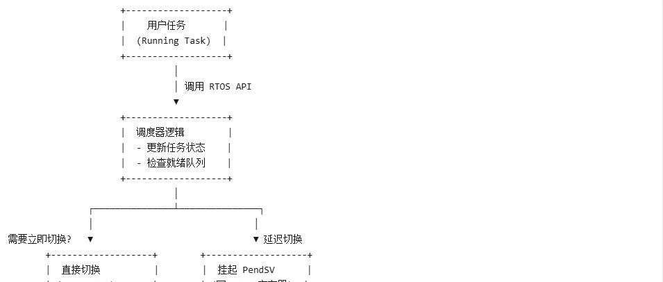

freertos之task模块（中）
task函数源码含有如下几部分内容：
1.优先级处理
2. 创建任务
3.启动第1个任务
4. 任务切换
5.任务阻塞/唤醒
上一篇文章重点讲了前三条，而这篇文章我们会从调度器入手，讲一讲任务的切换（调度)机制。
1.freeRtos调度器的调度机制
| 调度模式 | configUSE_PREEMPTION=0 | configUSE_PREEMPTION=1 |
|---|---|---|
| 宏展开结果 | portYIELD_WITHIN_API() | |
| 触发任务切换的时机 | taskYIELD() | |
| 典型调用场景 | xTaskResumeAll() 中检测到待处理任务时 |
2.freeRtos调度器的优先级机制
configMAX_PRIORITIES 最高）。3.freeRtos调度器的功能
通过调度器，任务在以下状态间切换：（具体函数实现会在下篇文章分析）
就绪（Ready）vTaskSuspend()），不参与调度。
4.freeRtos调度的实现原理保存当前任务上下文（寄存器、栈指针）到其任务控制块（TCB）。 从就绪队列中选择最高优先级任务。 恢复新任务的上下文并执行。

__asm void xPortPendSVHandler( void ){extern uxCriticalNesting;extern pxCurrentTCB;extern vTaskSwitchContext;/* *INDENT-OFF* */PRESERVE8mrs r0, pspisbldr r3, =pxCurrentTCB /* Get the location of the current TCB. */ldr r2, [ r3 ]stmdb r0 !, { r4 - r11 } /* Save the remaining registers. */str r0, [ r2 ] /* Save the new top of stack into the first member of the TCB. */stmdb sp !, { r3, r14 }mov r0,msr basepri, r0dsbisbbl vTaskSwitchContextmov r0,msr basepri, r0ldmia sp !, { r3, r14 }ldr r1, [ r3 ]ldr r0, [ r1 ] /* The first item in pxCurrentTCB is the task top of stack. */ldmia r0 !, { r4 - r11 } /* Pop the registers and the critical nesting count. */msr psp, r0isbbx r14nop/* *INDENT-ON* */}
void vTaskSwitchContext( void ){if( uxSchedulerSuspended != ( UBaseType_t ) pdFALSE ){/* The scheduler is currently suspended - do not allow a context* switch. */xYieldPending = pdTRUE;}else{xYieldPending = pdFALSE;traceTASK_SWITCHED_OUT();{portALT_GET_RUN_TIME_COUNTER_VALUE( ulTotalRunTime );ulTotalRunTime = portGET_RUN_TIME_COUNTER_VALUE();/* Add the amount of time the task has been running to the* accumulated time so far. The time the task started running was* stored in ulTaskSwitchedInTime. Note that there is no overflow* protection here so count values are only valid until the timer* overflows. The guard against negative values is to protect* against suspect run time stat counter implementations - which* are provided by the application, not the kernel. */if( ulTotalRunTime > ulTaskSwitchedInTime ){pxCurrentTCB->ulRunTimeCounter += ( ulTotalRunTime - ulTaskSwitchedInTime );}else{mtCOVERAGE_TEST_MARKER();}ulTaskSwitchedInTime = ulTotalRunTime;}/* Check for stack overflow, if configured. */taskCHECK_FOR_STACK_OVERFLOW();/* Before the currently running task is switched out, save its errno. */{pxCurrentTCB->iTaskErrno = FreeRTOS_errno;}/* Select a new task to run using either the generic C or port* optimised asm code. */taskSELECT_HIGHEST_PRIORITY_TASK(); /*lint !e9079 void * is used as this macro is used with timers and co-routines too. Alignment is known to be fine as the type of the pointer stored and retrieved is the same. */traceTASK_SWITCHED_IN();/* After the new task is switched in, update the global errno. */{FreeRTOS_errno = pxCurrentTCB->iTaskErrno;}{/* Switch Newlib's _impure_ptr variable to point to the _reent* structure specific to this task.* See the third party link http://www.nadler.com/embedded/newlibAndFreeRTOS.html* for additional information. */_impure_ptr = &( pxCurrentTCB->xNewLib_reent );}}}
这个函数是调度器选择下一个task的核心函数
如果调度器不被挂起且栈未溢出，则会调用taskSELECT_HIGHEST_PRIORITY_TASK()来找到优先级最高，就绪时间最早的任务来进行。
5.freeRtos调度器的启动条件taskYIELD() 或进入阻塞状态（如 vTaskDelay()）。系统节拍（Tick）中断
if( xYieldRequired != pdFALSE ){taskYIELD_IF_USING_PREEMPTION();}else{mtCOVERAGE_TEST_MARKER();}
这一段代码出自 vTaskPrioritySet() ，该函数会修改任务的优先级，若优先级高于正在执行的task，则会调用taskYIELD_IF_USING_PREEMPTION()直接调度。
if( xSchedulerRunning != pdFALSE ){/* If the created task is of a higher priority than the current task* then it should run now. */if( pxCurrentTCB->uxPriority < pxNewTCB->uxPriority ){taskYIELD_IF_USING_PREEMPTION();}else{mtCOVERAGE_TEST_MARKER();}}
这一段代码出自prvAddNewTaskToReadyList（），若新的ready任务优先级高于current任务，则调用taskYIELD_IF_USING_PREEMPTION()直接调度。
void xPortSysTickHandler( void ){/* The SysTick runs at the lowest interrupt priority, so when this interrupt* executes all interrupts must be unmasked. There is therefore no need to* save and then restore the interrupt mask value as its value is already* known - therefore the slightly faster vPortRaiseBASEPRI() function is used* in place of portSET_INTERRUPT_MASK_FROM_ISR(). */vPortRaiseBASEPRI();{/* Increment the RTOS tick. */if( xTaskIncrementTick() != pdFALSE ){/* A context switch is required. Context switching is performed in* the PendSV interrupt. Pend the PendSV interrupt. */portNVIC_INT_CTRL_REG = portNVIC_PENDSVSET_BIT;}}vPortClearBASEPRIFromISR();}
（systemtick的中断服务函数）
这个中断会在xTaskIncrementTick()返回ture的时候触发pendsv并切换任务。而xTaskIncrementTick()会在有更高优先级任务的delay到期时返回ture提醒调度器触发调度。
xTaskIncrementTick()BaseType_t xTaskIncrementTick( void ){TCB_t * pxTCB;TickType_t xItemValue;BaseType_t xSwitchRequired = pdFALSE;/* Called by the portable layer each time a tick interrupt occurs.* Increments the tick then checks to see if the new tick value will cause any* tasks to be unblocked. */traceTASK_INCREMENT_TICK( xTickCount );if( uxSchedulerSuspended == ( UBaseType_t ) pdFALSE ){/* Minor optimisation. The tick count cannot change in this* block. */const TickType_t xConstTickCount = xTickCount + ( TickType_t ) 1;/* Increment the RTOS tick, switching the delayed and overflowed* delayed lists if it wraps to 0. */xTickCount = xConstTickCount;if( xConstTickCount == ( TickType_t ) 0U ) /*lint !e774 'if' does not always evaluate to false as it is looking for an overflow. */{taskSWITCH_DELAYED_LISTS();}else{mtCOVERAGE_TEST_MARKER();}/* See if this tick has made a timeout expire. Tasks are stored in* the queue in the order of their wake time - meaning once one task* has been found whose block time has not expired there is no need to* look any further down the list. */if( xConstTickCount >= xNextTaskUnblockTime ){for( ; ; ){if( listLIST_IS_EMPTY( pxDelayedTaskList ) != pdFALSE ){/* The delayed list is empty. Set xNextTaskUnblockTime* to the maximum possible value so it is extremely* unlikely that the* if( xTickCount >= xNextTaskUnblockTime ) test will pass* next time through. */xNextTaskUnblockTime = portMAX_DELAY; /*lint !e961 MISRA exception as the casts are only redundant for some ports. */break;}else{/* The delayed list is not empty, get the value of the* item at the head of the delayed list. This is the time* at which the task at the head of the delayed list must* be removed from the Blocked state. */pxTCB = listGET_OWNER_OF_HEAD_ENTRY( pxDelayedTaskList ); /*lint !e9079 void * is used as this macro is used with timers and co-routines too. Alignment is known to be fine as the type of the pointer stored and retrieved is the same. */xItemValue = listGET_LIST_ITEM_VALUE( &( pxTCB->xStateListItem ) );if( xConstTickCount < xItemValue ){/* It is not time to unblock this item yet, but the* item value is the time at which the task at the head* of the blocked list must be removed from the Blocked* state - so record the item value in* xNextTaskUnblockTime. */xNextTaskUnblockTime = xItemValue;break; /*lint !e9011 Code structure here is deedmed easier to understand with multiple breaks. */}else{mtCOVERAGE_TEST_MARKER();}/* It is time to remove the item from the Blocked state. */( void ) uxListRemove( &( pxTCB->xStateListItem ) );/* Is the task waiting on an event also? If so remove* it from the event list. */if( listLIST_ITEM_CONTAINER( &( pxTCB->xEventListItem ) ) != NULL ){( void ) uxListRemove( &( pxTCB->xEventListItem ) );}else{mtCOVERAGE_TEST_MARKER();}/* Place the unblocked task into the appropriate ready* list. */prvAddTaskToReadyList( pxTCB );/* A task being unblocked cannot cause an immediate* context switch if preemption is turned off. */{/* Preemption is on, but a context switch should* only be performed if the unblocked task has a* priority that is equal to or higher than the* currently executing task. */if( pxTCB->uxPriority >= pxCurrentTCB->uxPriority ){xSwitchRequired = pdTRUE;}else{mtCOVERAGE_TEST_MARKER();}}}}}/* Tasks of equal priority to the currently running task will share* processing time (time slice) if preemption is on, and the application* writer has not explicitly turned time slicing off. */{if( listCURRENT_LIST_LENGTH( &( pxReadyTasksLists[ pxCurrentTCB->uxPriority ] ) ) > ( UBaseType_t ) 1 ){xSwitchRequired = pdTRUE;}else{mtCOVERAGE_TEST_MARKER();}}{/* Guard against the tick hook being called when the pended tick* count is being unwound (when the scheduler is being unlocked). */if( xPendedTicks == ( TickType_t ) 0 ){vApplicationTickHook();}else{mtCOVERAGE_TEST_MARKER();}}{if( xYieldPending != pdFALSE ){xSwitchRequired = pdTRUE;}else{mtCOVERAGE_TEST_MARKER();}}}else{++xPendedTicks;/* The tick hook gets called at regular intervals, even if the* scheduler is locked. */{vApplicationTickHook();}}return xSwitchRequired;}
这个函数会不断收到时钟模块的硬件中断，以此递增系统时钟并且不断检查delaylist中的所有tcb，如果有任务延迟到期，它就会将其放入readylist，而如果这个任务优先级比现行任务优先级更高，则会直接返回ture，让systemtick（）调度这个任务。
我们都知道，taskdelay（）函数可以使一个任务延迟一段时间，其实它是将任务的唤醒时间写在了tcb中等待xTaskIncrementTick()来对比并在恰当的时间唤醒任务。
vTaskSuspend()和vTaskResume()就是分别负责任务的阻塞与恢复。vTaskSuspend()
void vTaskSuspend( TaskHandle_t xTaskToSuspend ) { TCB_t * pxTCB; taskENTER_CRITICAL(); { /* If null is passed in here then it is the running task that is * being suspended. */ pxTCB = prvGetTCBFromHandle( xTaskToSuspend ); traceTASK_SUSPEND( pxTCB ); /* Remove task from the ready/delayed list and place in the * suspended list. */ if( uxListRemove( &( pxTCB->xStateListItem ) ) == ( UBaseType_t ) 0 ) { taskRESET_READY_PRIORITY( pxTCB->uxPriority ); } else { mtCOVERAGE_TEST_MARKER(); } /* Is the task waiting on an event also? */ if( listLIST_ITEM_CONTAINER( &( pxTCB->xEventListItem ) ) != NULL ) { ( void ) uxListRemove( &( pxTCB->xEventListItem ) ); } else { mtCOVERAGE_TEST_MARKER(); } vListInsertEnd( &xSuspendedTaskList, &( pxTCB->xStateListItem ) ); { BaseType_t x; for( x = 0; x < configTASK_NOTIFICATION_ARRAY_ENTRIES; x++ ) { if( pxTCB->ucNotifyState[ x ] == taskWAITING_NOTIFICATION ) { /* The task was blocked to wait for a notification, but is * now suspended, so no notification was received. */ pxTCB->ucNotifyState[ x ] = taskNOT_WAITING_NOTIFICATION; } } } } taskEXIT_CRITICAL(); if( xSchedulerRunning != pdFALSE ) { /* Reset the next expected unblock time in case it referred to the * task that is now in the Suspended state. */ taskENTER_CRITICAL(); { prvResetNextTaskUnblockTime(); } taskEXIT_CRITICAL(); } else { mtCOVERAGE_TEST_MARKER(); } if( pxTCB == pxCurrentTCB ) { if( xSchedulerRunning != pdFALSE ) { /* The current task has just been suspended. */ configASSERT( uxSchedulerSuspended == 0 ); portYIELD_WITHIN_API(); } else { /* The scheduler is not running, but the task that was pointed * to by pxCurrentTCB has just been suspended and pxCurrentTCB * must be adjusted to point to a different task. */ if( listCURRENT_LIST_LENGTH( &xSuspendedTaskList ) == uxCurrentNumberOfTasks ) /*lint !e931 Right has no side effect, just volatile. */ { /* No other tasks are ready, so set pxCurrentTCB back to * NULL so when the next task is created pxCurrentTCB will * be set to point to it no matter what its relative priority * is. */ pxCurrentTCB = NULL; } else { vTaskSwitchContext(); } } } else { mtCOVERAGE_TEST_MARKER(); } }
vTaskResume()
void vTaskResume( TaskHandle_t xTaskToResume ) { TCB_t * const pxTCB = xTaskToResume; /* It does not make sense to resume the calling task. */ configASSERT( xTaskToResume ); /* The parameter cannot be NULL as it is impossible to resume the * currently executing task. */ if( ( pxTCB != pxCurrentTCB ) && ( pxTCB != NULL ) ) { taskENTER_CRITICAL(); { if( prvTaskIsTaskSuspended( pxTCB ) != pdFALSE ) { traceTASK_RESUME( pxTCB ); /* The ready list can be accessed even if the scheduler is * suspended because this is inside a critical section. */ ( void ) uxListRemove( &( pxTCB->xStateListItem ) ); prvAddTaskToReadyList( pxTCB ); /* A higher priority task may have just been resumed. */ if( pxTCB->uxPriority >= pxCurrentTCB->uxPriority ) { /* This yield may not cause the task just resumed to run, * but will leave the lists in the correct state for the * next yield. */ taskYIELD_IF_USING_PREEMPTION(); } else { mtCOVERAGE_TEST_MARKER(); } } else { mtCOVERAGE_TEST_MARKER(); } } taskEXIT_CRITICAL(); } else { mtCOVERAGE_TEST_MARKER(); } }
这两个函数配套使用，由事件驱动，按照需求来阻塞/启动某个任务，值得一提的是，vTaskResume()中，若启动的任务优先级更高，则会调用pendsv进行抢占。
6.调度器的挂起机制
调度器也可以开启和关闭。当多个任务或中断需要访问共享资源（如全局变量、队列、外设寄存器）时，若未加保护，可能导致 数据竞争（Race Condition）。传统解决方案是 关中断（taskENTER_CRITICAL()），但会阻塞所有中断响应，破坏实时性。
TaskSuspendAll(）和xTaskResumeAll()用于挂起/恢复调度器（可嵌套），这两个任务不会被中断打断，也不会禁用中断。它们会控制宏uxSchedulerSuspended的值告诉调度器是否启动。
调度器挂起后，若PendSV 被触发（如调用 taskYIELD()），调度器会检查 uxSchedulerSuspended的值：若 uxSchedulerSuspended > 0，则 跳过上下文切换，仅标记 xYieldPending = pdTRUE（延迟处理）。
恢复调度器后（uxSchedulerSuspended == 0），再处理挂起的切换请求。
总而言之，这篇文章讲解了调度器的核心原理，它的启动，触发，挂起，恢复以及它对任务的各种处理。用一个表来概括：